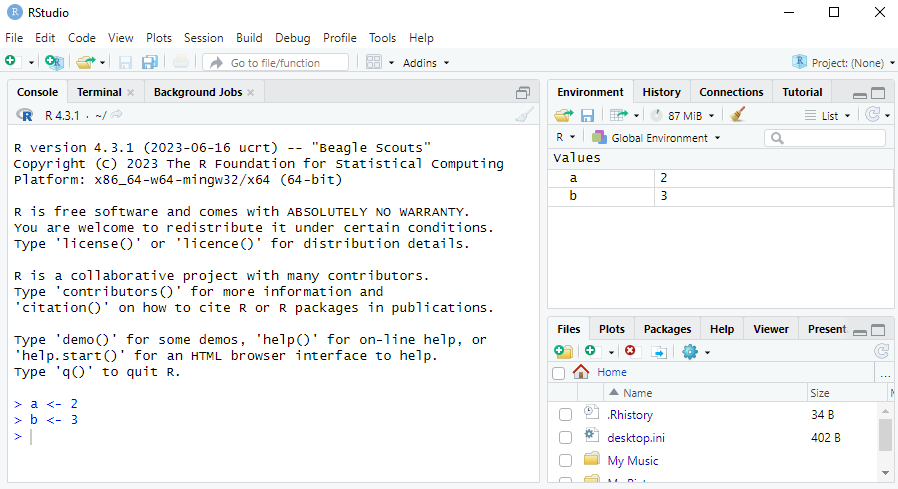
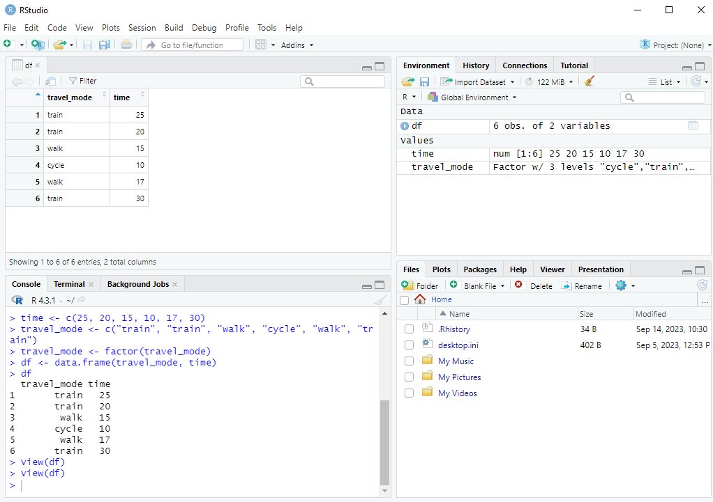

a <- 2
b <- 34 Objects and Object Types
In this chapter we will learn how to store objects in the R environment and about different object types in R.
4.1 The Assignment Operator
4.1.1 Assigning Objects
In the previous chapter when we were using R as a calculator, we simply typed the numbers we wanted to add if we wanted to add them, like 2 + 3. We can also store numbers in R as objects. We do this using the assignment operator <-, which is a “less than symbol” and a “minus” symbol next to each other.
For example, let’s assign the value 2 to an object called a and the value 3 to an object called b:
The <- operator assigns the value 2 to a, and similarly for b.
Variable names can be multiple characters long and can contain dots (.), underscores (_) and numbers - as long as they don’t start with a number. For example, a1, a.1, and a_1 are possible variable names, but 1a is not.
Because we use the assignment operator <- so often, RStudio has a shortcut for it. If you hold Alt and press -, RStudio will write <-, including spaces around it. It makes the spaces because a <- 2 is easier to read than a<-2.
4.1.2 The Environment Tab in RStudio
When we do this, we see values a=2 and b=3 in the Environment tab in RStudio, just like in the screenshot below:

We can now perform all the operations we learned about using a and b instead of the numbers. For example:
a + b[1] 5a / b[1] 0.66666674.1.3 Troubleshooting with the Assignment Operator
Although you can assign 2 to a with either a <- 2 or a<-2, it is very important that you don’t have a space in between the < and the - in the assignment operator. If you try to instead do a < - 2, R will check if a is less than -2, instead of assigning 2 to a. If a is not stored in the Environment you will get an error that says Error: object 'a' not found. This is another reason why need to be very careful when typing our code! It’s a good idea therefore to use the Alt+- shortcut to make <-.
It is also possible to use the = sign for assignment instead of <-. For example, it’s possible to do a = 2 instead. I will use <- in this course as it is the recommended approach in R style guides, but you are free to use = instead in the exam and assignments if you prefer.
4.2 Common Object Types
We now go through some different object types.
4.2.1 Numeric Vectors
In R we often work with vectors, which are collections of values of the same type. You can think of these as a column of data in an Excel file. If we want to store the vector of numbers a=\begin{pmatrix}1 \\ 3 \\ 7 \\ 2\end{pmatrix} in R we can use the c() function, where “c” stands for combine. We put each element of the vector in c() separated by commas:
a <- c(1, 3, 7, 2)Notice in the Environment tab that now we have overwritten the a <- 2 that we had before. We can see that a is now a num [1:4]: it’s a numeric vector with 4 elements.1
One thing worth mentioning is that when we store single numbers, such as with b <- 3, we are actually creating a numeric vector with only 1 element (instead of 4 like in the example above). We could create an identical object with b <- c(3) instead.
4.2.2 Logical Vectors
Often we have data on a variable where the answers are “Yes” or “No”. We often code these as a logical vector which is binary: the elements are either TRUE (corresponding to “Yes”) or FALSE (corresponding to “No”). For example:
a <- c(TRUE, FALSE, TRUE, TRUE)We can see in the Environment tab that a is now a logi [1:4]: it’s a logical vector with 4 elements. It’s possible to convert logical vectors into numeric ones with 1s replacing the TRUEs and 0s replacing the FALSEs. We can do this with the as.numeric() function:
as.numeric(a)[1] 1 0 1 14.2.3 Character Vectors
R can also work with character vectors which are vectors composed of letters or words instead of numbers or logical constants (TRUE or FALSE). We have to write the words in quotes, otherwise R will think we are providing it with variable names instead:
a <- c("programming", "and", "quantitative", "skills")4.2.4 Factors (Categorical Variables)
Surveys often contain questions with multiple possible responses. For example, imagine a survey which asked people how long it took them to travel to campus and what mode of transportation they used, with the options being:
- Train
- Walk
- Cycle
Suppose we have 6 responses for this survey and we coded the times (in minutes) as a numeric vector time and the travel modes as a character vector travel_mode:
time <- c(25, 20, 15, 10, 17, 30)
travel_mode <- c("train", "train", "walk", "cycle", "walk", "train")Because categorical variables like travel_mode are so common, R has a special object type for them called factors. We can turn any vector into a factor using the factor() function:
travel_mode <- factor(travel_mode)
travel_mode[1] train train walk cycle walk train
Levels: cycle train walkWe can see in the Environment that we have a factor with 3 levels, "cycle", "train", "walk". The levels are all of the different categories.
Having a variable in this format will be very useful when we learn how to visualize data. They will also become very useful when we estimate statistical models with categorical data in Statistics 2 next year.
4.2.5 Data Frame
An object that we will use very frequently is the data.frame. This is a rectangular object with different columns representing different variables and rows representing different observations. For example, we could collect the 6 survey respondents about their commute into a data.frame as follows:
df <- data.frame(travel_mode, time)
df travel_mode time
1 train 25
2 train 20
3 walk 15
4 cycle 10
5 walk 17
6 train 30The variable names are listed on top with the values underneath. On the side we can see the numbers 1 to 6, which index the rows of the data.frame.
We can also view the data.frame in RStudio by clicking on df in the Environment tab. You could also open this by typing View(df) in the console. The first row means that the first respondent took the train and it took 25 minutes. The second row means that the second respondent also took the train and it took 20 minutes.

When variables are organized in a data.frame, it becomes very easy to summarize the data and make visualizations with them. We will learn how to do this in the upcoming chapters.
4.2.6 Lists
A data.frame is actually a special type of list, which is another object type. While all elements of a vector (created with the c() function) must have the same type (numeric, logical or factor), a list can have elements of any type, and also any length.
Here is an example of a list:
my_list <- list(x = 1:3, y = TRUE, z = c("a", "b"))It has elements that are numeric, logical and character vectors, and the elements all have different lengths (3, 1 and 2).
A data.frame can have elements/columns of different types (such as in the travel mode example above, which had numeric and factor variables), but all elements/columns of a data.frame must have the same length (unlike a list where any length is possible).
This is not relevant for the exam, but strictly speaking R has two numeric vector types: integer vectors and double vectors. An integer vector can only contain whole numbers (like -3 and 2), whereas a double vector can contain non-whole numbers (like -4.5 and 1.25). When we create the vector in the example with
a <- c(1, 3, 7, 2)it actually creates a double vector. To specify it to be an integer vector we can write anLafter the numbers:a <- c(1L, 3L, 7L, 2L). We can also convert the vector to integer with theas.integer()command, like:a <- as.integer(c(1, 3, 7, 2)). Why are non-whole numbers called double vectors? The “double” in the name for double vectors refers to the amount of precision with which R actually uses with numbers. What do we mean by precision? When R stores the number \frac{1}{3}, it doesn’t store it with an infinite number of 3s after the decimal (as your computer would run out of memory). R instead stores only a certain number of significant digits, up to 56 bytes. If we run the commandsprintf("%0.25f", 1/3), which prints \frac{1}{3} with 25 decimal places, we will see how R works with the number \frac{1}{3}. You will see that it’s something like 0.3333333333333333148296163. After about 15-20 numbers after the decimal point we start seeing random numbers. This is because it was only precise up to 15-20 decimal places. For this course, however, the difference between integer and double vectors will not be important.↩︎